То, что лежало в папках сайта, но не входит в страницы портфолио: две версии сайта «Новой Р.А.С.А.», эксперименты и баннеры. Работает через эмулятор Flash, так что что-то может вести себя не совсем как в 2010 году.
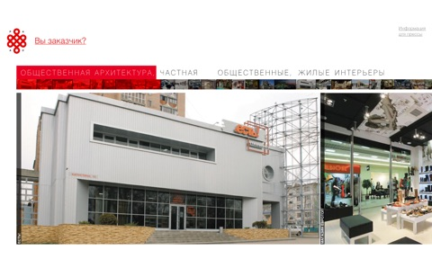
newr Ранняя версия: 36 работ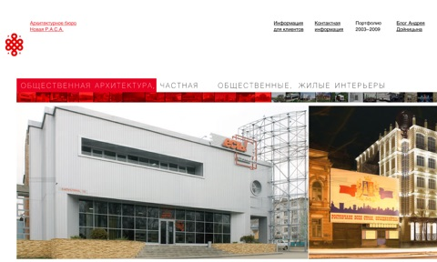
newrasa-2011 Версия с newrasa.ru, 2011: 38 проектов, 163 фотографии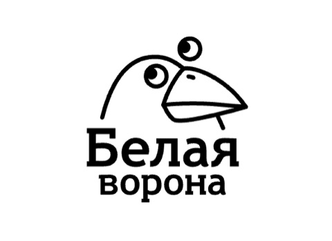
WhiteCrowNext.swf ads_1.swf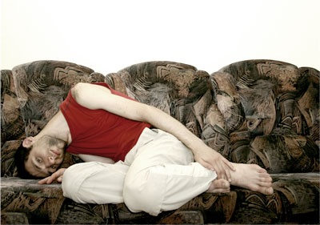
ae.swf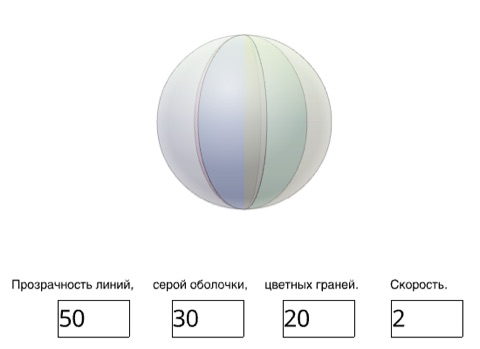
ball_550x400.swf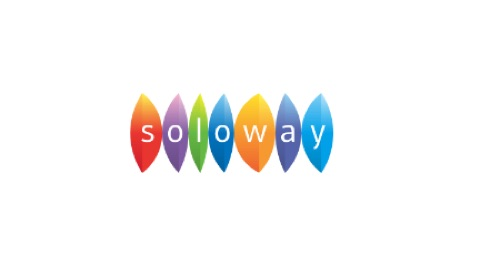
ball_720x400.swf Логотип Soloway, запускается по клику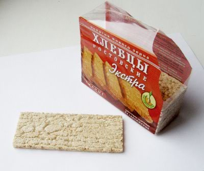
eating.swf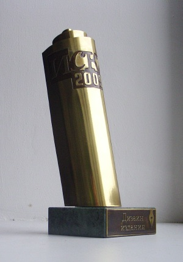
iskra.swf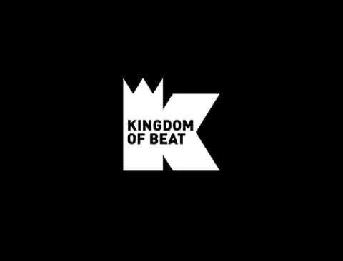
logo.swf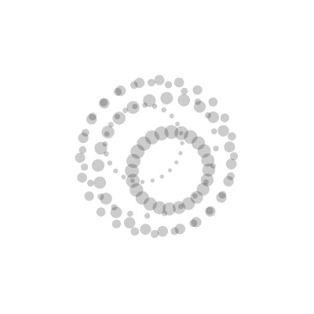
tags3_old.swf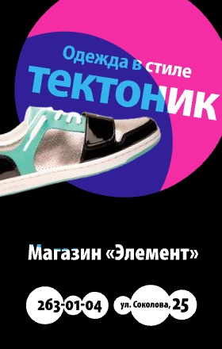
tektonik.swf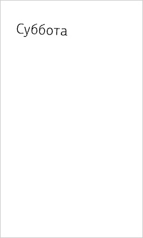
tema_240x400.swf